Glucose Reference Tracking
The Aptofit TrackPro glucose monitor feature supports pain-free wrist-based glucose reference readings without routine finger pricks.
Pain-Free Wellness Tracking From Your Wrist
Current Aptofit TrackPro offer: up to 50% off while available
Aptofit TrackPro is a smartwatch-style tracker that combines glucose reference monitoring with common wearable features like heart rate, sleep, steps, calories, blood oxygen, and phone notifications.
The Aptofit TrackPro is not positioned as a complicated medical device. It is better understood as a consumer wellness smartwatch made for people who want quick daily reference readings, activity motivation, and easier health awareness from the wrist.
Aptofit TrackPro is designed for one clear purpose: to help users stay more aware of their daily wellness patterns without making health tracking feel like a chore. Instead of relying on bulky devices or uncomfortable routines, the watch brings several useful tracking features into one wearable.
This watch is a health-focused smartwatch that tracks glucose reference readings, heart rate, blood oxygen, sleep, activity, calories, and smart notifications from the wrist. It is designed for users who want a simpler, pain-free way to monitor daily wellness trends.
Important note: Aptofit TrackPro should be treated as a consumer wellness tracker, not a replacement for professional medical testing, diagnosis, or treatment without doctor guidance.
The Aptofit TrackPro watch combines everyday smartwatch convenience with simple wellness tracking tools, making it easier to check key health-related trends from your wrist.
The Aptofit TrackPro glucose monitor feature supports pain-free wrist-based glucose reference readings without routine finger pricks.
The watch helps users follow daily heart rate patterns during rest, movement, and general activity.
The SPO2 feature provides blood oxygen reference readings for users who want broader wellness awareness.
Aptofit Watch tracks sleep duration, stages, and quality to help users better understand their rest habits.
The aptofit tracker feature monitors steps, calories, walking distance, and sports activity for daily motivation.
Users can receive call, text, and app alerts directly on the watch without checking their phone every time.
With IP67 water resistance, the watch is built for workouts, daily wear, and light water exposure.
Product material mentions long-lasting battery performance, helping reduce frequent charging interruptions.
No product is one-size-fits-all, and understanding both sides helps you make a more confident decision.
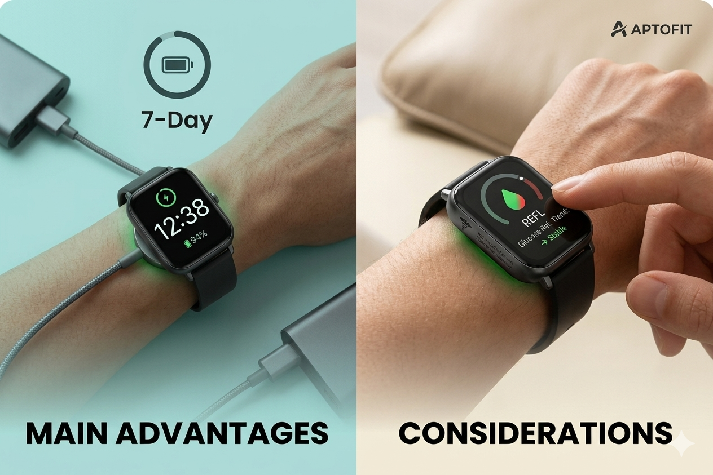
The Aptofit TrackPro specifications show that the product is built for regular daily use, not occasional wear. The design is especially useful for older adults or first-time smartwatch users because the screen is large and the controls are simple. That matters. A device can have many features, but if the user cannot read or navigate it easily, they stop using it.
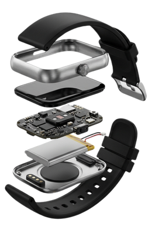
Transparency is our priority. While the TrackPro is a powerful wellness tool, it is essential to understand its role in your health routine.
Aptofit TrackPro works by combining built-in sensors, smartwatch software, and wrist-based tracking features to display wellness-related information. Its glucose feature is powered by an advanced Glucose Monitor Chip sensing system while other features, such as heart rate, SPO2, sleep, and activity tracking, work through wearable-style sensors and software interpretation.
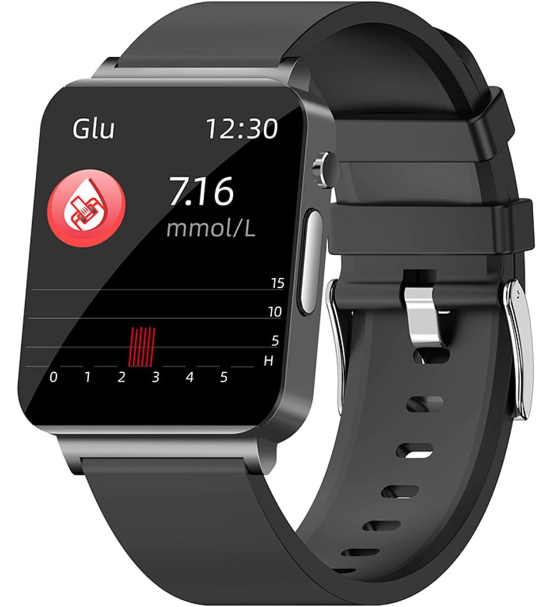
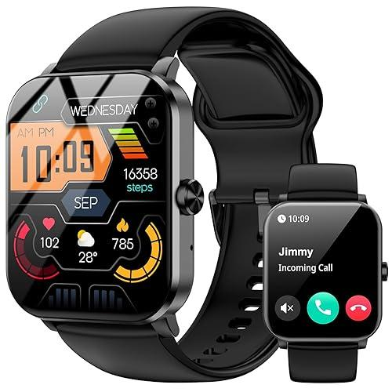
Aptofit trackpro glucose monitor becomes more useful when it is worn consistently. A single reading may only show one moment in time, but repeated daily tracking can help users notice broader wellness patterns.
Using the aptofit trackpro watch is designed to be simple, even for people who are not comfortable with technology.
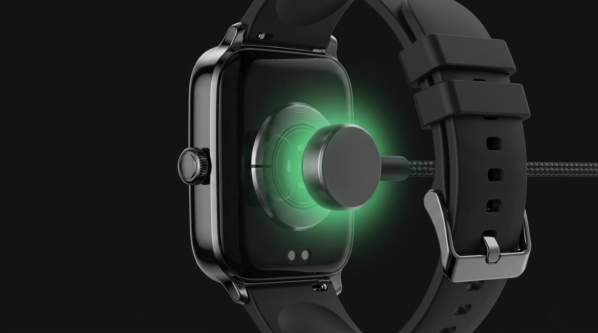
01Charge the device fully before first use.
Wear Aptofit TrackPro securely on your wrist, not too loose or too tight.
Turn on the watch and open the main menu.
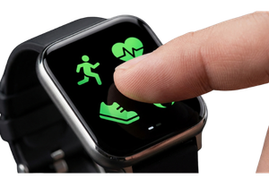
04Select the tracking feature you want to check, such as glucose reference, heart rate, blood oxygen, sleep, or steps.
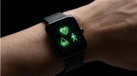
05Keep your wrist steady during on-demand readings for better consistency.
Review your daily trends instead of judging your health from one single number.
Use it alongside healthy habits, such as regular meals, hydration, walking, sleep, and professional medical guidance.
Contact a healthcare professional before making decisions about medication, diabetes care, or treatment routines.
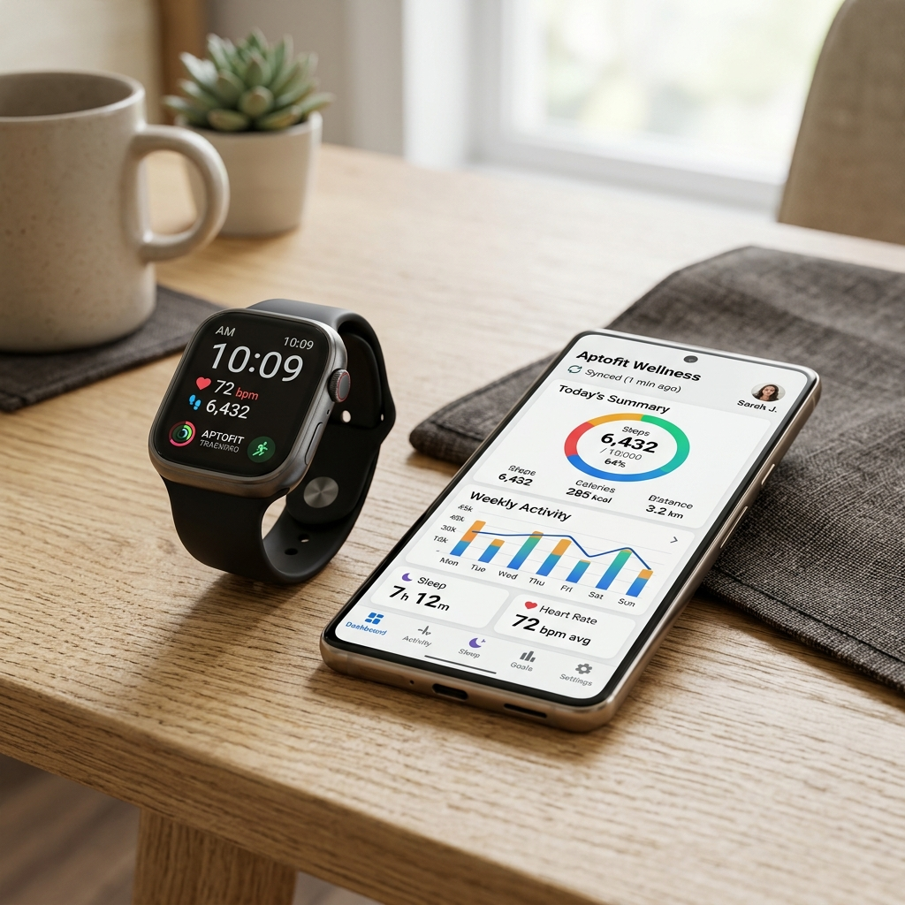
Aptofit trackpro glucose monitor works best when paired with a compatible smartphone app through Bluetooth. Pairing the watch allows users to view more detailed wellness data, check historical trends, and keep their smartwatch information organized.
If pairing fails, restart the watch and check Bluetooth permissions.
Check the user manual for setup, charging, and warranty instructions.
Many reviews focus on comfort, ease of use, battery life, and the convenience of having several health and fitness features in one smartwatch. The Aptofit Trackpro Rating is 4.8 through comments from users who mention long battery life, simple navigation and overall value compared with more expensive smartwatches.
“I bought it for my wife after reading the aptofit trackpro watch reviews. She likes the display, battery life, and the different tracking options. For the price, it feels like a practical health smartwatch.”
“I like how the watch keeps me moving during the week. I use the tracker for steps, calories, and sleep goals, and it feels simple enough to follow every day. The quality feels better than I expected for the price.”
“As someone who has tracked blood sugar for years, I wanted something easier for daily awareness. The Aptofit Track Pro watch is simple to use, and the charging is quick. I still follow my doctor’s advice, but this helps me stay more aware.”
“The smart notifications are useful, but the health features are what I check most. I can tap the watch and see my heart rate and SPO2 without digging through my phone. It feels convenient.”
“My daughter helped me buy aptofit trackpro after I saw the offer online. I am not very tech-friendly, so I was worried at first. After a few days, I got used to checking the screen after walks. Now it feels like a small reminder to stay active.”
“I read a few aptofit trackpro reviews before ordering because I was unsure about the glucose reference feature. I still use my regular medical device when accuracy matters, but this watch is handy for daily wellness checks. It has made me pay more attention to routine, meals, and evening walks.”
| Review Theme | What Users Like |
|---|---|
| Ease of use | Simple menus and large display |
| Battery | Lasts several days between charges |
| Comfort | Suitable for daily wrist wear |
| Features | Glucose reference, heart rate, SPO2, sleep, activity |
| Value | Lower-cost alternative to expensive smartwatches |
The current offer promotes a 50% discount for online buyers while stock is available. The product material also highlights fast shipping, a 30-day money-back guarantee, and discount-based pricing for customers.
It helps reduce the risk of ordering from lookalike pages, outdated listings, or sellers that may not provide the same offer terms. The official purchase route is also where customers are most likely to find the active Aptofit TrackPro discounts and deals.
The best way to buy Aptofit TrackPro is by checking availability before ordering because limited-time pricing can change.
| Package | Best For | Why It Makes Sense |
|---|---|---|
| 1 Aptofit TrackPro | Personal use | Best for trying the watch for your own daily wellness tracking. |
| 2 Aptofit TrackPro watches | Couples or parent gift | Useful if you want one for yourself and one for a spouse, parent, or family member. |
| 3 Aptofit TrackPro watches | Family wellness tracking | A practical option for households where multiple people want simple health awareness. |
| 4 Aptofit TrackPro watches | Best value bundle shoppers | Usually the strongest option for buyers looking for lower average cost per watch. |
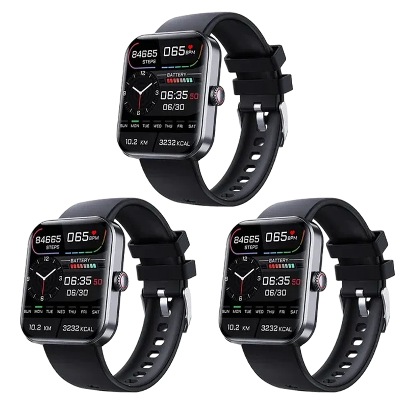
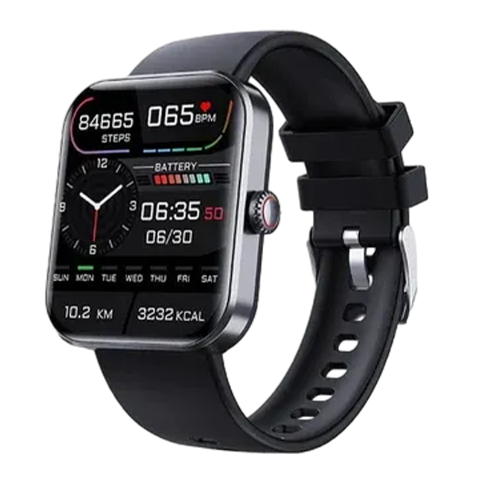
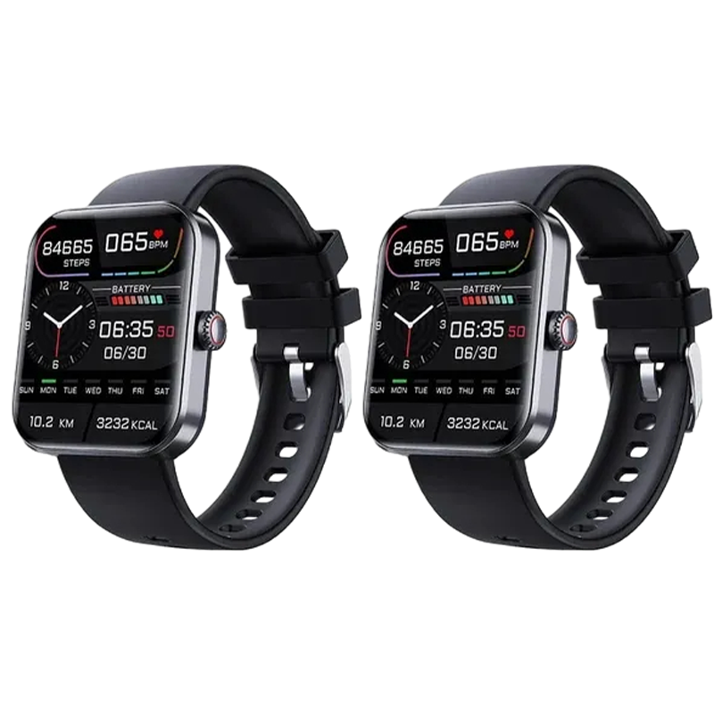
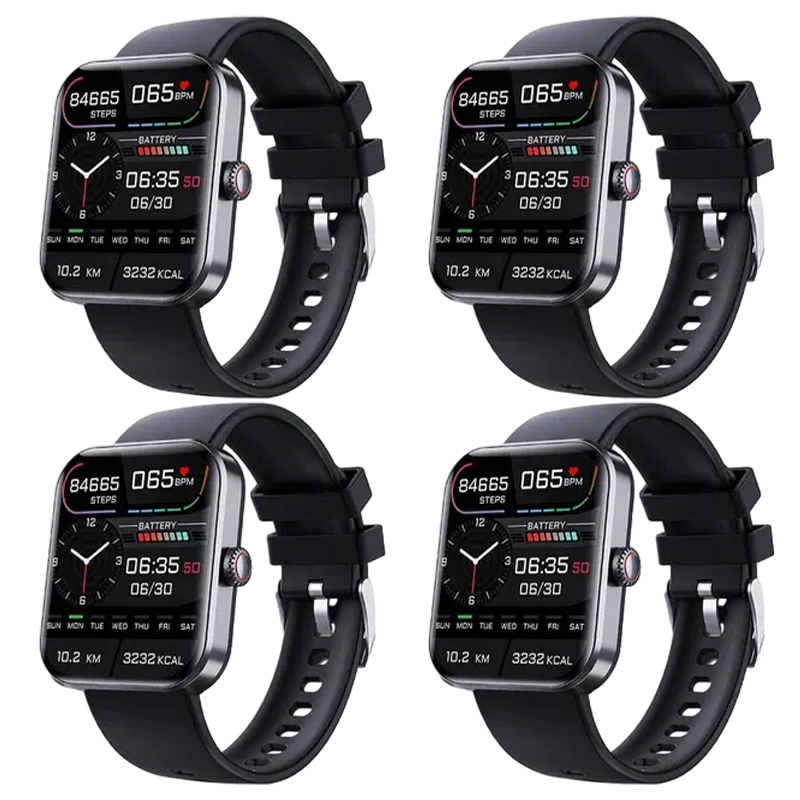
The Aptofit TrackPro watch is designed as a wrist-worn smartwatch with a comfortable band and large screen suitable for daily wear, exercise, sleep tracking, and older users who need a clear display.
Aptofit Watch is best for people who want a simple health smartwatch that combines daily wellness tracking, activity support, and glucose reference awareness in one device.
The large display and easy menu make it less intimidating than many smartwatches.
The pain-free glucose reference feature is the main reason many shoppers look for this product.
It helps users track heart rate, blood oxygen, sleep, steps, and activity trends.
The aptofit tracker features can help users stay motivated with steps, calories, and movement goals.
It can be a practical gift for parents, spouses, or family members who want easier daily wellness awareness.
Aptofit TrackPro is a strong fit for people who want simple wellness visibility without using several separate devices. It may be especially helpful if you want a readable smartwatch, pain-free glucose reference tracking, activity motivation, and basic health-related insights from your wrist.
Choose Aptofit TrackPro if you want easy daily health awareness from your wrist.
Aptofit TrackPro is designed for wellness reference data, not clinical monitoring.
The watch becomes more useful when it is worn consistently.
It suits users who want a large display, simple controls, and practical tracking features.
The simple design makes it useful for parents, spouses, seniors, or first-time smartwatch users.
Choose a higher-end smartwatch if you need GPS, advanced sports metrics, or deep app integrations.
Use approved medical devices if you need doctor-directed glucose monitoring or clinical accuracy.
Aptofit TrackPro is best for buyers who want comfort, simplicity, daily awareness, and affordability.
It is not for users expecting a hospital-grade device or a premium smartwatch replacement.
Aptofit Track Pro is not a substitute for clinical glucose meters, prescribed devices, lab testing, diagnosis, or treatment plans. People with diabetes or medical conditions should continue following professional medical advice.
While Aptofit TrackPro is a powerful tool for many, it's important to choose the device that matches your specific health and fitness needs.
For daily wellness awareness, basic activity support, and simple health reference tracking, Aptofit TrackPro remains a practical choice.
Compare Aptofit TrackPro Features Before BuyingThe Aptofit TrackPro watch stands out because it combines glucose reference tracking, fitness features, smart notifications, and a large display in one affordable wearable.
| Feature | Aptofit TrackPro | Fitbit-Style Tracker | Apple Watch-Style | Generic Budget |
|---|---|---|---|---|
| Main purpose | Wellness tracking | Fitness tracking | Full smartwatch use | Basic tracking |
| Glucose reference tracking | Yes | Usually no | Usually no | Sometimes claimed |
| Heart rate tracking | Yes | Yes | Yes | Usually yes |
| Blood oxygen tracking | Yes | Often | Often | Sometimes |
| Sleep tracking | Yes | Yes | Yes | Sometimes |
| Activity tracking | Yes | Yes | Yes | Basic |
| Smart notifications | Yes | Yes | Yes | Sometimes |
| Built-in GPS | Not highlighted | Sometimes | Often | Rare |
| App ecosystem | Basic | Strong | Very strong | Limited |
| Ease of use | Simple | Moderate | Advanced | Varies |
| Large display | Yes | Varies | Yes | Varies |
| Senior-friendly | Strong | Moderate | Can be complex | Varies |
| Price positioning | Discount-focused | Mid-range | Higher | Low |
| Support route | Official website | Brand support | Brand support | Often unclear |
| Best for | Daily wellness awareness | Fitness motivation | Advanced smartwatch users | Budget shoppers |
When you buy Aptofit TrackPro through our site, the product material promotes fast shipping and a 30-day money-back guarantee. Shipping timelines may vary based on location, stock, order volume, and fulfillment conditions.
Keep the original packaging, order confirmation, and support emails until you are fully satisfied. If the product does not meet your expectations, use the official support route within the return window.

The Aptofit TrackPro official website promotes a 30-day money-back guarantee. This helps buyers try the smartwatch with less pressure, especially if they are unsure whether it fits their routine, comfort needs, or tracking preferences.
A guarantee matters because wearable devices are personal. A watch can look good online, but the real test is how it feels during daily use, sleep, walking, workouts, and regular health checks.
Always read the latest guarantee terms on the checkout page before placing your order.
Aptofit TrackPro works best when it becomes part of your daily routine. Follow these best practices to get the most accurate and helpful insights.
Everything you need to know about Aptofit TrackPro.
Aptofit TrackPro is a health-focused smartwatch made for daily wellness tracking. It helps users follow reference readings for glucose, heart rate, blood oxygen, sleep, steps, calories, and activity from the wrist.
Aptofit TrackPro works as a consumer wellness tracker for people who want easier visibility into daily health-related trends. It is best used for general awareness, habit tracking, and routine monitoring, not for medical diagnosis or treatment decisions.
The Aptofit watch is a wearable wellness device with smartwatch-style tracking features. Buyers should order through the official website, review the guarantee terms, and use the watch with realistic expectations as a wellness tracker.
No. Aptofit TrackPro should be treated as a consumer wellness smartwatch, not a medical device. Users with diabetes, blood pressure concerns, or other medical conditions should continue following professional advice and approved testing methods.
The watch includes a glucose reference tracking feature promoted for wrist-based wellness awareness. However, it should not replace clinical glucose meters, approved CGMs, lab testing, or doctor-directed monitoring.
Aptofit TrackPro is promoted with an IP67 water-resistant design, which makes it suitable for daily wear, sweat, workouts, and light water exposure. It should not be treated as a diving or swimming watch unless the official user manual clearly confirms that use.
The safest place to buy Aptofit TrackPro is through the official website. This helps buyers access the current offer, product details, bundle options, return policy, and customer support route.
The price may change depending on promotions, stock, and bundle availability. Current product material promotes a discount-focused offer, so buyers should check the official checkout page for the latest pricing before ordering.
Yes. Aptofit TrackPro is commonly promoted with online discounts and bundle offers. The available deal may vary, so buyers should confirm the final price, quantity, shipping cost, and guarantee terms before payment.
Battery life can vary based on usage, settings, notifications, and tracking frequency. Product material mentions long battery performance, but users should check the official aptofit trackpro specifications and user manual for the most accurate battery guidance.
Most users should be able to complete the basic setup within a few minutes. Setup usually involves charging the watch, turning it on, pairing it with the companion app if available, and adjusting basic settings.
Some wellness smartwatches promote glucose reference tracking from the wrist, including Aptofit TrackPro. However, users should understand that smartwatch-based glucose features are not the same as approved medical glucose monitors or CGMs.
Yes. The large display, simple wrist-based design, and easy access to daily wellness readings make it suitable for seniors or first-time smartwatch users who prefer a less complicated device.
A user manual will be included or provided after purchase. It can help with charging, setup, pairing, feature navigation, care instructions, warranty details, and safe usage guidance.
When ordering from the Aptofit TrackPro official website, buyers should look for secure checkout signals before entering payment details. A trustworthy checkout should use encrypted payment processing, clear order details, visible pricing, return terms, and support access.
For order help, refund questions, product setup, shipping updates, or warranty support, use the official Aptofit TrackPro contact route.
Important: For health-related concerns, do not rely on customer support as medical guidance. Speak with a qualified healthcare professional before changing medication, glucose monitoring routines, diet, or treatment decisions.
This Aptofit TrackPro official website content was last updated in May 2026 to reflect current product positioning, common buyer questions, feature details, safety framing, and discount-focused purchase intent.
Note: Because offers, prices, shipping terms, and product availability can change, buyers should always review the official checkout page before placing an order.
William M. from Île-de-France, FR
purchased Aptofit TrackPro
Just now